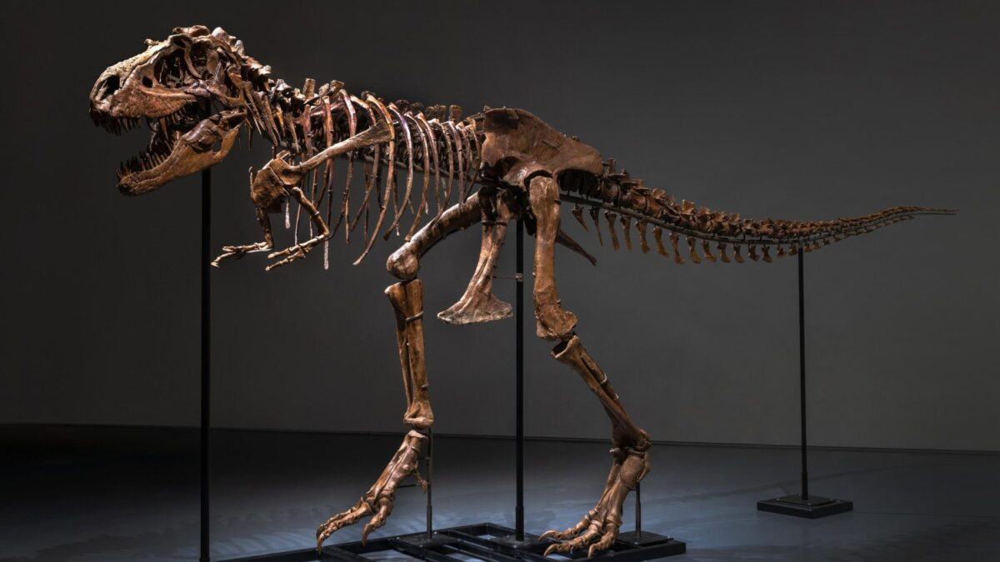

A Era dos Dinossauros
Viaje milhões de anos no passado e conheça algumas das criaturas mais impressionantes que já
habitaram a Terra.

Os dinossauros viveram na Terra muito antes do surgimento dos seres humanos.
Maravilhas da Natureza
Conheça florestas, montanhas, rios e a diversidade de seres vivos que tornam nosso planeta tão
especial.

A natureza é essencial para o equilíbrio da vida no planeta.
Por que preservar a natureza?
A preservação ambiental ajuda a proteger os animais,
as plantas e os ecossistemas do nosso planeta.
Ouça nossa apresentação